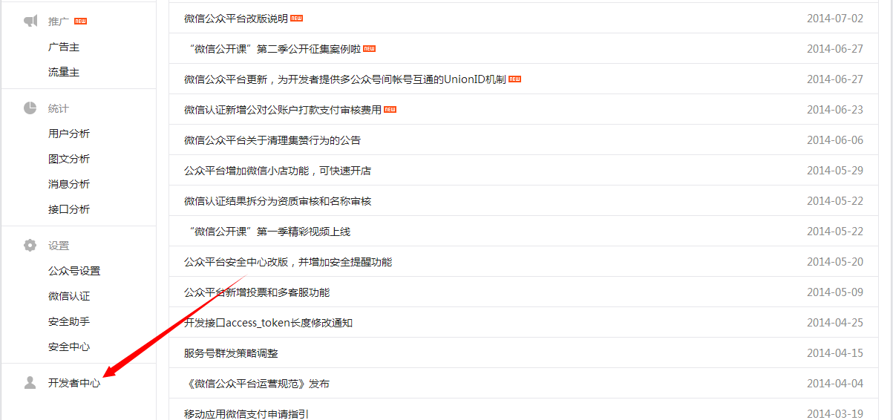
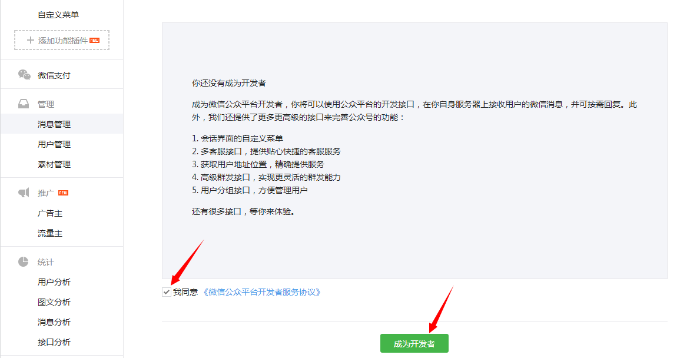
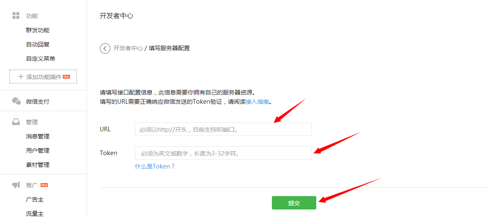
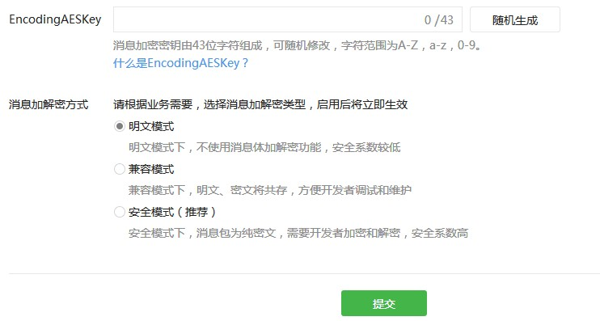
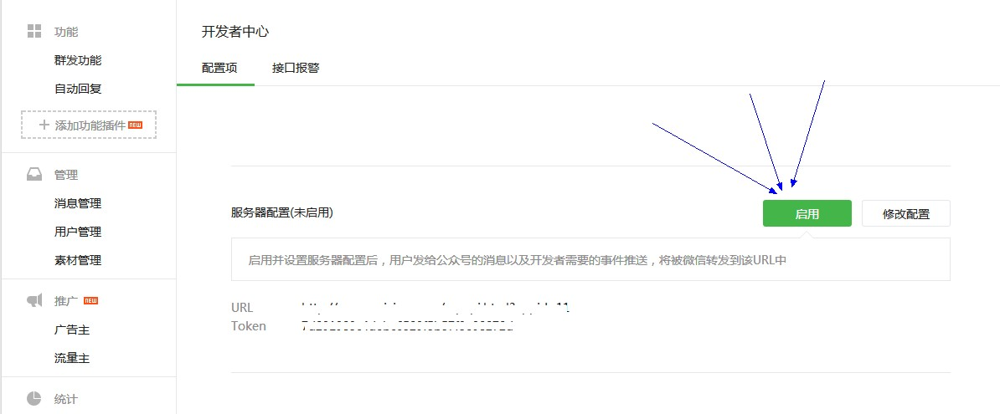

请务必认真阅读以下内容，才能更有效的完成配置工作，有疑问的请联系QQ：793495478咨询。
接口URL是：如，http://m.di3p.com/wsp/vcoreAction!vprocess?vxinpublic=gh_xxxxxtoken是：如，xxxxxx
1、登录 微信公众平台（http://mp.weixin.qq.com/）
点击左侧最下方进入开发者中心

2、点击"成为开发者"按钮，如之前操作过，可跳过直接进行步骤3

3、点击修改配置，填写接口配置信息。
接口URL如：http://m.di3p.com/wsp/vcoreAction!vprocess?vxinpublic=gh_xxxxxtoken如：xxxxxx
复制的时候，注意前后不要出现空格。如果提示url错误请检查一下。

EncodingAESKey这个不用管，随机生成就行
消息加解密方式，这一项选：明文模式
点击：提交

4、确认开启,点【启用】，很关键哦，一定要点
